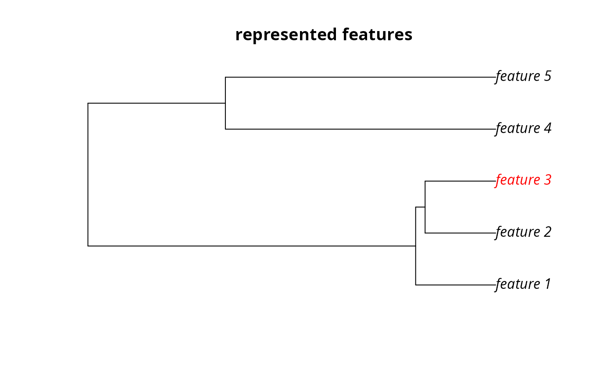
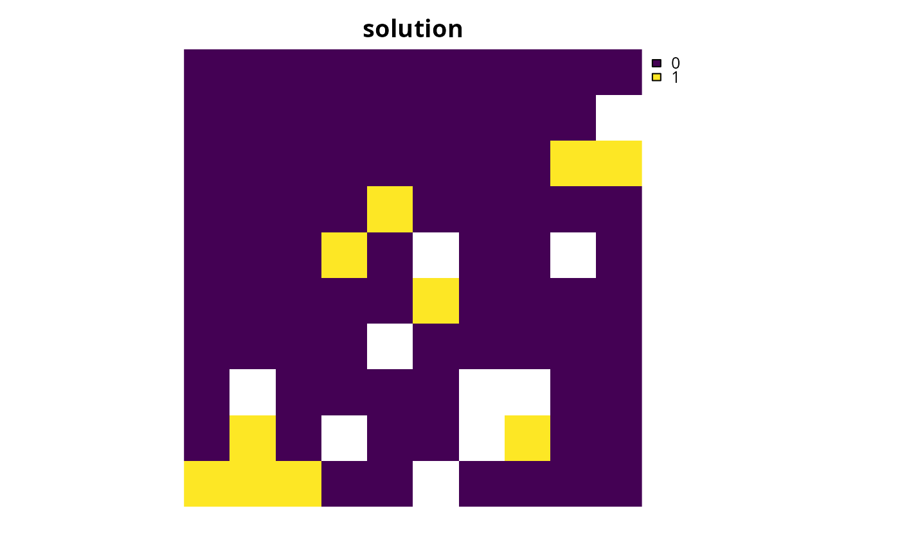

Conservation planning problems that aim to maximize the representation of features given a budget often will not able to conserve all of the features unless the budget is very high. In such budget-limited problems, it may be desirable to prefer the representation of some features over other features. This information can be incorporated into the problem using weights. Weights can be applied to a problem to favor the representation of some features over other features when making decisions about how the budget should be allocated.
# S4 method for ConservationProblem,numeric add_feature_weights(x, weights) # S4 method for ConservationProblem,matrix add_feature_weights(x, weights)
Arguments
| x |
|
|---|---|
| weights |
|
Value
Object (i.e. ConservationProblem) with the weights
added to it.
Details
Weights can only be applied to problems that have an objective
that is budget limited (e.g. add_max_cover_objective()). #'
They can be applied to problems that aim to maximize phylogenetic
representation (add_max_phylo_div_objective()) to favor the
representation of specific features over the representation of
some phylogenetic branches. Weights cannot be negative values
and must have values that are equal to or larger than zero.
Note that planning unit costs are scaled to 0.01 to identify
the cheapest solution among multiple optimal solutions. This means
that the optimization process will favor cheaper solutions over solutions
that meet feature targets (or occurrences) when feature weights are
lower than 0.01.
numericcontaining weights for each feature. Note that this type of argument cannot be used to specify weights for problems with multiple zones.
matrixcontaining weights for each feature in each zone.
Here, each row corresponds to a different feature in argument to
x, each column corresponds to a different zone in argument to
x, and each cell contains the weight value for a given feature
that the solution can to secure in a given zone. Note that
if the problem contains targets created using
add_manual_targets() then a matrix should be
supplied containing a single column that indicates that weight for
fulfilling each target.
See also
Examples
#>#> #>#> #> #># load data data(sim_pu_raster, sim_features, sim_phylogeny, sim_pu_zones_stack, sim_features_zones) # create minimal problem that aims to maximize the number of features # adequately conserved given a total budget of 3800. Here, each feature # needs 20 % of its habitat for it to be considered adequately conserved p1 <- problem(sim_pu_raster, sim_features) %>% add_max_features_objective(budget = 3800) %>% add_relative_targets(0.2) %>% add_binary_decisions() # create weights that assign higher importance to features with less # suitable habitat in the study area (w2 <- exp((1 / cellStats(sim_features, "sum")) * 200))#> layer.1 layer.2 layer.3 layer.4 layer.5 #> 11.03585 606.63186 16.11015 108.65716 34.01731# create problem using rarity weights p2 <- p1 %>% add_feature_weights(w2) # create manually specified weights that assign higher importance to # certain features. These weights could be based on a pre-calculated index # (e.g. an index measuring extinction risk where higher values # denote higher extinction risk) w3 <- c(0, 0, 0, 100, 200) p3 <- p1 %>% add_feature_weights(w3) # \dontrun{ # solve problems s1 <- stack(solve(p1), solve(p2), solve(p3))#> Gurobi Optimizer version 9.0.2 build v9.0.2rc0 (linux64) #> Optimize a model with 6 rows, 95 columns and 545 nonzeros #> Model fingerprint: 0x15e6d43f #> Variable types: 0 continuous, 95 integer (95 binary) #> Coefficient statistics: #> Matrix range [2e-01, 2e+02] #> Objective range [1e-04, 1e+00] #> Bounds range [1e+00, 1e+00] #> RHS range [4e+03, 4e+03] #> Found heuristic solution: objective -0.0000000 #> Presolve time: 0.00s #> Presolved: 6 rows, 95 columns, 545 nonzeros #> Variable types: 0 continuous, 95 integer (95 binary) #> Presolved: 6 rows, 95 columns, 545 nonzeros #> #> #> Root relaxation: objective 4.909018e+00, 30 iterations, 0.00 seconds #> #> Nodes | Current Node | Objective Bounds | Work #> Expl Unexpl | Obj Depth IntInf | Incumbent BestBd Gap | It/Node Time #> #> 0 0 4.90902 0 6 -0.00000 4.90902 - - 0s #> H 0 0 1.9979863 4.90902 146% - 0s #> H 0 0 2.9979659 4.90902 63.7% - 0s #> 0 0 4.90824 0 9 2.99797 4.90824 63.7% - 0s #> 0 0 4.90725 0 9 2.99797 4.90725 63.7% - 0s #> 0 0 4.90713 0 10 2.99797 4.90713 63.7% - 0s #> 0 0 4.90686 0 14 2.99797 4.90686 63.7% - 0s #> 0 0 4.90685 0 14 2.99797 4.90685 63.7% - 0s #> 0 0 4.90599 0 11 2.99797 4.90599 63.6% - 0s #> 0 0 4.90593 0 13 2.99797 4.90593 63.6% - 0s #> 0 0 4.90592 0 14 2.99797 4.90592 63.6% - 0s #> 0 2 4.90477 0 14 2.99797 4.90477 63.6% - 0s #> #> Cutting planes: #> Cover: 1 #> MIR: 6 #> StrongCG: 3 #> RLT: 1 #> #> Explored 8 nodes (231 simplex iterations) in 0.03 seconds #> Thread count was 1 (of 4 available processors) #> #> Solution count 3: 2.99797 1.99799 -0 #> #> Optimal solution found (tolerance 1.00e-01) #> Best objective 2.997965888532e+00, best bound 2.997988029529e+00, gap 0.0007% #> Gurobi Optimizer version 9.0.2 build v9.0.2rc0 (linux64) #> Optimize a model with 6 rows, 95 columns and 545 nonzeros #> Model fingerprint: 0xcde35cb0 #> Variable types: 0 continuous, 95 integer (95 binary) #> Coefficient statistics: #> Matrix range [2e-01, 2e+02] #> Objective range [1e-04, 6e+02] #> Bounds range [1e+00, 1e+00] #> RHS range [4e+03, 4e+03] #> Found heuristic solution: objective -0.0000000 #> Presolve time: 0.00s #> Presolved: 6 rows, 95 columns, 545 nonzeros #> Variable types: 0 continuous, 95 integer (95 binary) #> Presolved: 6 rows, 95 columns, 545 nonzeros #> #> #> Root relaxation: objective 7.747768e+02, 18 iterations, 0.00 seconds #> #> Nodes | Current Node | Objective Bounds | Work #> Expl Unexpl | Obj Depth IntInf | Incumbent BestBd Gap | It/Node Time #> #> 0 0 774.77680 0 6 -0.00000 774.77680 - - 0s #> 0 0 774.71251 0 9 -0.00000 774.71251 - - 0s #> 0 0 774.69670 0 11 -0.00000 774.69670 - - 0s #> 0 0 774.69259 0 11 -0.00000 774.69259 - - 0s #> 0 0 774.68882 0 11 -0.00000 774.68882 - - 0s #> 0 0 774.68208 0 10 -0.00000 774.68208 - - 0s #> 0 0 774.68139 0 11 -0.00000 774.68139 - - 0s #> 0 0 774.66995 0 13 -0.00000 774.66995 - - 0s #> H 0 0 45.0511449 774.66995 1620% - 0s #> H 0 0 153.7082788 774.66995 404% - 0s #> 0 0 774.66871 0 12 153.70828 774.66871 404% - 0s #> 0 0 774.66860 0 13 153.70828 774.66860 404% - 0s #> 0 0 774.65196 0 14 153.70828 774.65196 404% - 0s #> 0 0 774.64180 0 15 153.70828 774.64180 404% - 0s #> 0 0 774.63891 0 16 153.70828 774.63891 404% - 0s #> 0 0 774.58304 0 15 153.70828 774.58304 404% - 0s #> 0 0 774.57292 0 15 153.70828 774.57292 404% - 0s #> 0 0 774.57018 0 15 153.70828 774.57018 404% - 0s #> 0 0 774.56045 0 15 153.70828 774.56045 404% - 0s #> H 0 0 606.6298845 774.56045 27.7% - 0s #> H 0 0 715.2870431 774.56045 8.29% - 0s #> #> Cutting planes: #> MIR: 6 #> StrongCG: 1 #> RLT: 2 #> #> Explored 1 nodes (157 simplex iterations) in 0.04 seconds #> Thread count was 1 (of 4 available processors) #> #> Solution count 5: 715.287 606.63 153.708 ... -0 #> #> Optimal solution found (tolerance 1.00e-01) #> Best objective 7.152870430944e+02, best bound 7.745604502585e+02, gap 8.2867% #> Gurobi Optimizer version 9.0.2 build v9.0.2rc0 (linux64) #> Optimize a model with 6 rows, 95 columns and 545 nonzeros #> Model fingerprint: 0x34972506 #> Variable types: 0 continuous, 95 integer (95 binary) #> Coefficient statistics: #> Matrix range [2e-01, 2e+02] #> Objective range [1e-04, 2e+02] #> Bounds range [1e+00, 1e+00] #> RHS range [4e+03, 4e+03] #> Found heuristic solution: objective -0.0000000 #> Presolve removed 3 rows and 3 columns #> Presolve time: 0.00s #> Presolved: 3 rows, 92 columns, 272 nonzeros #> Variable types: 0 continuous, 92 integer (92 binary) #> Presolved: 3 rows, 92 columns, 272 nonzeros #> #> #> Root relaxation: objective 2.999981e+02, 23 iterations, 0.00 seconds #> #> Nodes | Current Node | Objective Bounds | Work #> Expl Unexpl | Obj Depth IntInf | Incumbent BestBd Gap | It/Node Time #> #> 0 0 299.99806 0 2 -0.00000 299.99806 - - 0s #> H 0 0 199.9980909 299.99806 50.0% - 0s #> H 0 0 299.9980622 299.99806 0.00% - 0s #> 0 0 299.99806 0 2 299.99806 299.99806 0.00% - 0s #> #> Explored 1 nodes (23 simplex iterations) in 0.00 seconds #> Thread count was 1 (of 4 available processors) #> #> Solution count 3: 299.998 199.998 -0 #> #> Optimal solution found (tolerance 1.00e-01) #> Best objective 2.999980621935e+02, best bound 2.999980621935e+02, gap 0.0000%# plot solutions plot(s1, main = c("equal weights", "rarity weights", "manual weights"), axes = FALSE, box = FALSE)# } # plot the example phylogeny # \dontrun{ par(mfrow = c(1, 1)) plot(sim_phylogeny, main = "simulated phylogeny")# } # create problem with a maximum phylogenetic diversity objective, # where each feature needs 10 % of its distribution to be secured for # it to be adequately conserved and a total budget of 1900 p4 <- problem(sim_pu_raster, sim_features) %>% add_max_phylo_div_objective(1900, sim_phylogeny) %>% add_relative_targets(0.1) %>% add_binary_decisions() # \dontrun{ # solve problem s4 <- solve(p4)#> Gurobi Optimizer version 9.0.2 build v9.0.2rc0 (linux64) #> Optimize a model with 14 rows, 103 columns and 565 nonzeros #> Model fingerprint: 0x19bea6ab #> Variable types: 0 continuous, 103 integer (103 binary) #> Coefficient statistics: #> Matrix range [2e-01, 2e+02] #> Objective range [4e-06, 1e+00] #> Bounds range [1e+00, 1e+00] #> RHS range [2e+03, 2e+03] #> Found heuristic solution: objective -0.0000000 #> Presolve removed 5 rows and 5 columns #> Presolve time: 0.00s #> Presolved: 9 rows, 98 columns, 555 nonzeros #> Variable types: 0 continuous, 98 integer (98 binary) #> Presolved: 9 rows, 98 columns, 555 nonzeros #> #> #> Root relaxation: objective 5.344516e+00, 23 iterations, 0.00 seconds #> #> Nodes | Current Node | Objective Bounds | Work #> Expl Unexpl | Obj Depth IntInf | Incumbent BestBd Gap | It/Node Time #> #> 0 0 5.34452 0 5 -0.00000 5.34452 - - 0s #> 0 0 5.24678 0 6 -0.00000 5.24678 - - 0s #> H 0 0 2.9402664 5.24678 78.4% - 0s #> 0 0 5.24429 0 7 2.94027 5.24429 78.4% - 0s #> 0 0 5.24428 0 8 2.94027 5.24428 78.4% - 0s #> 0 0 5.24405 0 8 2.94027 5.24405 78.4% - 0s #> 0 0 5.24401 0 9 2.94027 5.24401 78.4% - 0s #> 0 0 5.24399 0 10 2.94027 5.24399 78.4% - 0s #> 0 0 5.24397 0 10 2.94027 5.24397 78.4% - 0s #> 0 2 5.24023 0 10 2.94027 5.24023 78.2% - 0s #> H 6 3 3.5363171 4.18960 18.5% 6.8 0s #> #> Cutting planes: #> Cover: 1 #> MIR: 3 #> RLT: 1 #> #> Explored 9 nodes (111 simplex iterations) in 0.04 seconds #> Thread count was 1 (of 4 available processors) #> #> Solution count 3: 3.53632 2.94027 -0 #> #> Optimal solution found (tolerance 1.00e-01) #> Best objective 3.536317127664e+00, best bound 3.833000595646e+00, gap 8.3896%# find which features have their targets met targets_met4 <- cellStats(s4 * sim_features, "sum") > (0.1 * cellStats(sim_features, "sum")) # plot the example phylogeny and color the represented features in red plot(sim_phylogeny, main = "represented features", tip.color = replace(rep("black", nlayers(sim_features)), which(targets_met4), "red"))# } # we can see here that the third feature ("layer.3", i.e. # sim_features[[3]]) is not represented in the solution. Let us pretend # that it is absolutely critical this feature is adequately conserved # in the solution. For example, this feature could represent a species # that plays important role in the ecosystem, or a species that is # important commercial activities (e.g. eco-tourism). So, to generate # a solution that conserves the third feature whilst also aiming to # maximize phylogenetic diversity, we will create a set of weights that # assign a particularly high weighting to the third feature w5 <- c(0, 0, 1000, 0, 0) # we can see that this weighting (i.e. w5[3]) has a much higher value than # the branch lengths in the phylogeny so solutions that represent this # feature be much closer to optimality print(sim_phylogeny$edge.length)#> [1] 1.42105185 0.34712544 0.04100098 0.30612447 0.30612447 0.59604770 1.17212960 #> [8] 1.17212960# \dontrun{ # create problem with high weighting for the third feature and solve it s5 <- p4 %>% add_feature_weights(w5) %>% solve()#> Gurobi Optimizer version 9.0.2 build v9.0.2rc0 (linux64) #> Optimize a model with 14 rows, 103 columns and 565 nonzeros #> Model fingerprint: 0x19bea6ab #> Variable types: 0 continuous, 103 integer (103 binary) #> Coefficient statistics: #> Matrix range [2e-01, 2e+02] #> Objective range [4e-06, 1e+00] #> Bounds range [1e+00, 1e+00] #> RHS range [2e+03, 2e+03] #> Found heuristic solution: objective -0.0000000 #> Presolve removed 5 rows and 5 columns #> Presolve time: 0.00s #> Presolved: 9 rows, 98 columns, 555 nonzeros #> Variable types: 0 continuous, 98 integer (98 binary) #> Presolved: 9 rows, 98 columns, 555 nonzeros #> #> #> Root relaxation: objective 5.344516e+00, 23 iterations, 0.00 seconds #> #> Nodes | Current Node | Objective Bounds | Work #> Expl Unexpl | Obj Depth IntInf | Incumbent BestBd Gap | It/Node Time #> #> 0 0 5.34452 0 5 -0.00000 5.34452 - - 0s #> 0 0 5.24678 0 6 -0.00000 5.24678 - - 0s #> H 0 0 2.9402664 5.24678 78.4% - 0s #> 0 0 5.24429 0 7 2.94027 5.24429 78.4% - 0s #> 0 0 5.24428 0 8 2.94027 5.24428 78.4% - 0s #> 0 0 5.24405 0 8 2.94027 5.24405 78.4% - 0s #> 0 0 5.24401 0 9 2.94027 5.24401 78.4% - 0s #> 0 0 5.24399 0 10 2.94027 5.24399 78.4% - 0s #> 0 0 5.24397 0 10 2.94027 5.24397 78.4% - 0s #> 0 2 5.24023 0 10 2.94027 5.24023 78.2% - 0s #> H 6 3 3.5363171 4.18960 18.5% 6.8 0s #> #> Cutting planes: #> Cover: 1 #> MIR: 3 #> RLT: 1 #> #> Explored 9 nodes (111 simplex iterations) in 0.02 seconds #> Thread count was 1 (of 4 available processors) #> #> Solution count 3: 3.53632 2.94027 -0 #> #> Optimal solution found (tolerance 1.00e-01) #> Best objective 3.536317127664e+00, best bound 3.833000595646e+00, gap 8.3896%# find which features have their targets met targets_met5 <- cellStats(s5 * sim_features, "sum") > (0.1 * cellStats(sim_features, "sum")) # plot the example phylogeny and color the represented features in red # here we can see that this solution only adequately conserves the # third feature. This means that, given the budget, we are faced with the # trade-off of conserving either the third feature, or a phylogenetically # diverse set of three different features. plot(sim_phylogeny, main = "represented features", tip.color = replace(rep("black", nlayers(sim_features)), which(targets_met5), "red"))# } # create multi-zone problem with maximum features objective, # with 10 % representation targets for each feature, and set # a budget such that the total maximum expenditure in all zones # cannot exceed 3000 p6 <- problem(sim_pu_zones_stack, sim_features_zones) %>% add_max_features_objective(3000) %>% add_relative_targets(matrix(0.1, ncol = 3, nrow = 5)) %>% add_binary_decisions() # create weights that assign equal weighting for the representation # of each feature in each zone except that it does not matter if # feature 1 is represented in zone 1 and it really important # that feature 3 is really in zone 1 w7 <- matrix(1, ncol = 3, nrow = 5) w7[1, 1] <- 0 w7[3, 1] <- 100 # create problem with weights p7 <- p6 %>% add_feature_weights(w7) # \dontrun{ # solve problems s6 <- solve(p6)#> Gurobi Optimizer version 9.0.2 build v9.0.2rc0 (linux64) #> Optimize a model with 106 rows, 285 columns and 1905 nonzeros #> Model fingerprint: 0xe9518199 #> Variable types: 0 continuous, 285 integer (285 binary) #> Coefficient statistics: #> Matrix range [2e-01, 2e+02] #> Objective range [3e-05, 1e+00] #> Bounds range [1e+00, 1e+00] #> RHS range [1e+00, 3e+03] #> Found heuristic solution: objective -0.0000000 #> Presolve time: 0.00s #> Presolved: 106 rows, 285 columns, 1905 nonzeros #> Variable types: 0 continuous, 285 integer (285 binary) #> Presolved: 106 rows, 285 columns, 1905 nonzeros #> #> #> Root relaxation: objective 7.938175e+00, 248 iterations, 0.00 seconds #> #> Nodes | Current Node | Objective Bounds | Work #> Expl Unexpl | Obj Depth IntInf | Incumbent BestBd Gap | It/Node Time #> #> 0 0 7.93818 0 11 -0.00000 7.93818 - - 0s #> H 0 0 4.9996186 7.93818 58.8% - 0s #> 0 0 7.56188 0 18 4.99962 7.56188 51.2% - 0s #> H 0 0 4.9996398 7.56188 51.2% - 0s #> 0 0 7.56101 0 19 4.99964 7.56101 51.2% - 0s #> 0 0 7.27065 0 11 4.99964 7.27065 45.4% - 0s #> H 0 0 4.9996466 7.27065 45.4% - 0s #> 0 0 7.26884 0 12 4.99965 7.26884 45.4% - 0s #> 0 0 7.25820 0 14 4.99965 7.25820 45.2% - 0s #> H 0 0 4.9996473 7.25820 45.2% - 0s #> 0 0 7.25660 0 16 4.99965 7.25660 45.1% - 0s #> 0 0 7.25580 0 18 4.99965 7.25580 45.1% - 0s #> 0 0 7.25572 0 19 4.99965 7.25572 45.1% - 0s #> 0 0 7.25341 0 21 4.99965 7.25341 45.1% - 0s #> 0 0 7.25246 0 22 4.99965 7.25246 45.1% - 0s #> 0 0 7.25219 0 23 4.99965 7.25219 45.1% - 0s #> 0 0 7.25144 0 24 4.99965 7.25144 45.0% - 0s #> 0 0 7.25144 0 24 4.99965 7.25144 45.0% - 0s #> H 0 0 4.9996488 7.25144 45.0% - 0s #> 0 2 7.25041 0 24 4.99965 7.25041 45.0% - 0s #> #> Cutting planes: #> Gomory: 1 #> Cover: 10 #> MIR: 5 #> StrongCG: 4 #> GUB cover: 1 #> RLT: 6 #> #> Explored 124 nodes (1709 simplex iterations) in 0.16 seconds #> Thread count was 1 (of 4 available processors) #> #> Solution count 6: 4.99965 4.99965 4.99965 ... -0 #> #> Optimal solution found (tolerance 1.00e-01) #> Best objective 4.999648781179e+00, best bound 5.312475879683e+00, gap 6.2570%#> Gurobi Optimizer version 9.0.2 build v9.0.2rc0 (linux64) #> Optimize a model with 106 rows, 285 columns and 1905 nonzeros #> Model fingerprint: 0xbdbcef08 #> Variable types: 0 continuous, 285 integer (285 binary) #> Coefficient statistics: #> Matrix range [2e-01, 2e+02] #> Objective range [3e-05, 1e+02] #> Bounds range [1e+00, 1e+00] #> RHS range [1e+00, 3e+03] #> Found heuristic solution: objective -0.0000000 #> Presolve removed 1 rows and 1 columns #> Presolve time: 0.00s #> Presolved: 105 rows, 284 columns, 1814 nonzeros #> Variable types: 0 continuous, 284 integer (284 binary) #> Presolved: 105 rows, 284 columns, 1814 nonzeros #> #> #> Root relaxation: objective 1.058784e+02, 121 iterations, 0.00 seconds #> #> Nodes | Current Node | Objective Bounds | Work #> Expl Unexpl | Obj Depth IntInf | Incumbent BestBd Gap | It/Node Time #> #> 0 0 105.87844 0 10 -0.00000 105.87844 - - 0s #> H 0 0 102.9996465 105.87844 2.79% - 0s #> #> Explored 1 nodes (121 simplex iterations) in 0.01 seconds #> Thread count was 1 (of 4 available processors) #> #> Solution count 2: 103 -0 #> #> Optimal solution found (tolerance 1.00e-01) #> Best objective 1.029996464541e+02, best bound 1.058784434632e+02, gap 2.7950%# plot solutions plot(stack(category_layer(s6), category_layer(s7)), main = c("equal weights", "manual weights"), axes = FALSE, box = FALSE)# } # create minimal problem to show the correct method for setting # weights for problems with manual targets p8 <- problem(sim_pu_raster, sim_features) %>% add_max_features_objective(budget = 1500) %>% add_manual_targets(data.frame(feature = c("layer.1", "layer.4"), type = "relative", target = 0.1)) %>% add_feature_weights(matrix(c(1, 200), ncol = 1)) %>% add_binary_decisions() # \dontrun{ # solve problem s8 <- solve(p8)#> Gurobi Optimizer version 9.0.2 build v9.0.2rc0 (linux64) #> Optimize a model with 3 rows, 92 columns and 272 nonzeros #> Model fingerprint: 0x2bbe4267 #> Variable types: 0 continuous, 92 integer (92 binary) #> Coefficient statistics: #> Matrix range [2e-01, 2e+02] #> Objective range [1e-04, 2e+02] #> Bounds range [1e+00, 1e+00] #> RHS range [2e+03, 2e+03] #> Found heuristic solution: objective -0.0000000 #> Presolve removed 3 rows and 92 columns #> Presolve time: 0.00s #> Presolve: All rows and columns removed #> #> Explored 0 nodes (0 simplex iterations) in 0.00 seconds #> Thread count was 1 (of 4 available processors) #> #> Solution count 1: -0 #> No other solutions better than -0 #> #> Optimal solution found (tolerance 1.00e-01) #> Best objective -0.000000000000e+00, best bound -0.000000000000e+00, gap 0.0000%# }